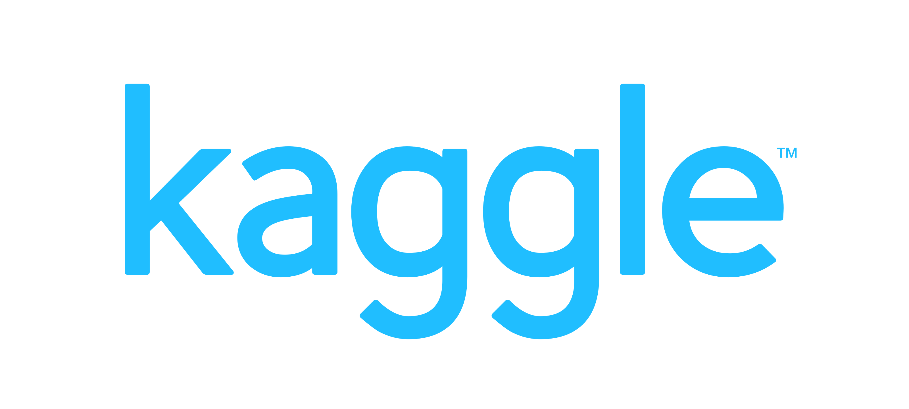

Workshop for Natural Language Processing Open Source Software (NLP-OSS)
20 July 2018 @ ACL
With great scientific breakthroughs come solid engineering and open communities. The Natural Language Processing (NLP) community has benefited greatly from the open culture in sharing knowledge, data, and software. The primary objective of this workshop is to further the sharing of insights on the engineering and community aspects of creating, developing, and maintaining NLP open source software (OSS) which we seldom talk about in scientific publications. Our secondary goal is to promote synergies between different open source projects and encourage cross-software collaborations and comparisons.
We refer to Natural Language Processing OSS as an umbrella term that not only covers traditional syntactic, semantic, phonetic, and pragmatic applications; we extend the definition to include task-specific applications (e.g., machine translation, information retrieval, question-answering systems), low-level string processing that contains valid linguistic information (e.g. Unicode creation for new languages, language-based character set definitions) and machine learning/artificial intelligence frameworks with functionalities focusing on text applications.
In the earlier days of NLP, linguistic software was often monolithic and the learning curve to install, use, and extend the tools was steep and frustrating. More often than not, NLP OSS developers/users interact in siloed communities within the ecologies of their respective projects. In addition to engineering aspects of NLP software, the open source movement has brought a community aspect that we often overlook in building impactful NLP technologies.
An example of precious OSS knowledge comes from SpaCy developer Montani (2017), who shared her thoughts and challenges of maintaining commercial NLP OSS, such as handling open issues on the issue tracker, model release and packaging strategy and monetizing NLP OSS for sustainability.
Řehůřek (2017) shared another example of insightful discussion on bridging the gap between academia and industry through creating open source and student incubation programs. Řehůřek discussed the need to look beyond the publish-or-perish culture to avoid the brittle “mummy effect” in SOTA research code/techniques.
We hope that the NLP-OSS workshop becomes the intellectual forum to collate various open source knowledge beyond the scientific contribution, announce new software/features, promote the open source culture and best practices that go beyond the conferences.
sponsors
Sponsorship helps keep NLP-OSS sustainable to the widest possible audience. The NLP-OSS workshop is organized by volunteers from both academia and industry. Sponsorship goes to covering the cost of invited speakers.
If you, your company, or your institution are interested in sponsoring the NLP-OSS, please send us an email at nlposs.workshop@gmail.com.
Gold Level Sponsors
|  |
Silver Level Sponsors
Bronze Level Sponsors

|
Workshop Program
0845 - 0900 Loading Presentations to Computer
0900 - 0905 Opening Remarks
0905 - 0950 Invited Talk 1 (Joel Nothman) [slides]
0950 - 1030 Lightning Presentation for Posters 1 [slides]
1030 - 1100 Break
1100 - 1145 Poster Session 1
AllenNLP: A Deep Semantic Natural Language Processing Platform
Matt Gardner, Joel Grus, Mark Neumann, Oyvind Tafjord, Pradeep Dasigi, Nelson F. Liu, Matthew Peters, Michael Schmitz and Luke Zettlemoyer
Stop Word Lists in Free Open-source Software Packages
Joel Nothman, Hanmin Qin and Roman Yurchak
Texar: A Modularized, Versatile, and Extensible Toolbox for Deep Text Generation
Zhiting Hu, Zichao Yang, Tiancheng Zhao, Haoran Shi, Junxian He, Di Wang, Xuezhe Ma, Zhengzhong Liu, Xiaodan Liang, Lianhui Qin, Devendra Singh Chaplot, Bowen Tan, Xingjiang Yu and Eric Xing
The ACL Anthology
Daniel Gildea, Min-Yen Kan, Nitin Madnani, Christoph Teichmann and Martin Villalba
The risk of sub-optimal use of Open Source NLP Software: UKB is inadvertently state-of-the-art in knowledge-based WSD
Eneko Agirre, Oier Lopez de Lacalle and Aitor Soroa
1200 - 1400 Lunch
1400 - 1445 Invited Talk 2 (Christopher Manning)
1445 - 1530 Invited Talk 3 (Marcin Junczys-Dowmunt)
1530 - 1600 Break
1600 - 1645 Lightning Presentation for Posters 2 [slides]
1645 - 1730 Poster Session 2
Baseline: A Library for Rapid Modeling, Experimentation and Development of Deep Learning Algorithms targeting NLP
Daniel Pressel, Sagnik Ray Choudhury, Brian Lester, Yanjie Zhao and Matt Barta
OpenSeq2Seq: Extensible toolkit for distributed and mixed precision training of sequence-to-sequence models
Oleksii Kuchaiev, Boris Ginsburg, Igor Gitman, Vitaly Lavrukhin, Carl Case and Paulius Micikevicius
Integrating Multiple NLP Technologies into an Open-source Platform for Multilingual Media Monitoring
Ulrich Germann, Renars Liepins, Didzis Gosko and Guntis Barzdins
The Annotated Transformer
Alexander Rush
1730 - 1735 Closing Remarks
(Full proceedings on https://aclanthology.info/events/ws-2018#W18-25)
Invited Speakers
Open-Source Software's Responsibility to Science
Joel Nothman, University of Sydney
Open-source software makes sophisticated technologies available to a wide audience. Arguably, most people applying language processing and machine learning techniques rely on popular open source tools targeted at these applications. Users may themselves be incapable of implementing the underlying algorithms. Users may or may not have extensive training to critically conduct experiments with these tools.
As maintainers of popular scientific software, we should be aware of our user base, and consider the ways in which our software design and documentation can lead or mislead users with respect to scientific best practices. In this talk, I will present some examples of these risks, primarily drawn from my experience developing Scikit-learn. For example: How can we help users avoid data leakage in cross-validation? How can we help users report precisely which algorithm or metric was used in an experiment?
Volunteer OSS maintainers have limited ability to see and manage these risks, and need the scientific community’s assistance to get things right in design, implementation and documentation.
Bio
Joel began contributing to the Scientific Python ecosystem of open-source software as a research student at the University of Sydney in 2008. He has since made substantial contributions to the NLTK, Scipy, Pandas and IPython packages among others, but presently puts most of his open-source energies into maintaining Scikit-learn, a popular machine learning toolkit. Joel works as a data science research engineer at the University of Sydney, who fund some of his open-source development efforts. He completed his PhD on event reference there in 2014, and has been teaching their Natural Language Processing unit since 2016.
Stanford CoreNLP: 15 Years of Developing Academic Open Source Software
Christopher Manning, Stanford University
My students and I at the Stanford NLP Group started releasing academic open source NLP software relatively early, in 2002. Over the years, the status and popularity of particular tools, and, since 2010, of the integrated Stanford CoreNLP offering has continually grown. It is not only used as a reliable tool — and easy mark to beat — in academic NLP, but it is widely used across government, non-profits, startups, and large companies. In this talk, I give my reflections on building academic open source software: what is required, what is important, and what is not so important; what we did right and what we did wrong; how a software project can be maintained long-term in such a context, how it adds to and detracts from doing academic research, narrowly defined; and how the world has changed and what the prospects are for the future.
Bio
Prof. Christopher Manning is the Thomas M. Siebel Professor in Machine Learning at Stanford University, in the Departments of Computer Science and Linguistics. He works on software that can intelligently process, understand, and generate human language material. He is a leader in applying Deep Learning to Natural Language Processing, with well-known research on the GloVe model of word vectors, Tree Recursive Neural Networks, sentiment analysis, neural network dependency parsing, neural machine translation, and deep language understanding. (Read more …) His computational linguistics work also covers probabilistic models of language, natural language inference and multilingual language processing, including being a principal developer of Stanford Dependencies and Universal Dependencies. Manning has coauthored leading textbooks on statistical approaches to Natural Language Processing (NLP) (Manning and Schütze 1999) and information retrieval (Manning, Raghavan, and Schütze, 2008), as well as linguistic monographs on ergativity and complex predicates. Manning is an ACM Fellow, a AAAI Fellow, an ACL Fellow, and Past President of the ACL. Research of his has won ACL, Coling, EMNLP, and CHI Best Paper Awards. He has a B.A. (Hons) from The Australian National University, a Ph.D. from Stanford in 1994, and he held faculty positions at Carnegie Mellon University and the University of Sydney before returning to Stanford. He is a member of the Stanford NLP group (@stanfordnlp) and manages development of the Stanford CoreNLP software.
Building Marian (A Fast Neural Machine Translation in C++)
Marcin Junczys-Dowmunt, Microsoft Translation
This talk will share some lessons learnt from building Marian. More details coming up…
Bio

Marcin Junczys-Dowmunt is a Principal NLP Scientist in the Machine Translation team at Microsoft – Redmond since January 2018. Before joining Microsoft, He was an Assistant Professor at the Adam Mickiewicz University in Poznan, Poland, and a visiting researcher in the MT group at the University of Edinburgh. He collaborated for many years with the World Intellectual Property Organization and the United Nations, helping with the development of their in-house statistical and neural machine translation systems. His main research interests are neural machine translation, automatic post-editing and grammatical error correction. Most of his open-source activity is being eaten up by his NMT pet-project Marian.
Important Dates
The NLP-OSS workshop will be co-located with the ACL 2018 conference.
- Paper Submission:
8th April 23:59 American Samoa Time - Paper Reviews Starts:
14th April (Sat) - Paper Reviews Due:
3rd May (Thurs) - Notification of Acceptance:
9th May (Wed) - Camera-Ready Version:
25th May (Fri) 23:59 American Samoa Time - Workshop: 20th July (Fri)
Organizers
- Lucy Park, NAVER Corp.
- Masato Hagiwara, Duolingo Inc.
- Dmitrijs Milajevs, NIST and Queen Mary University of London
- Liling Tan, Rakuten Institute of Technology
Program Committee
- Martin Andrews, Red Cat Labs
- Steven Bird, Charles Darwin University
- Francis Bond, Nanyang Technological University
- Jason Baldridge, Google
- Steven Bethard, University of Arizona
- Fred Blain, University of Sheffield
- James Bradbury, Salesforce Research
- Denny Britz, Prediction Machines
- Marine Carpuat, University of Maryland
- Kyunghyun Cho, New York University
- Grzegorz Chrupała, Tilburg University
- Hal Daumé III, University of Maryland
- Jon Dehdari, Think Big Analytics
- Christian Federmann, Microsoft Research
- Mary Ellen Foster, University of Glasgow
- Michael Wayne Goodman, University of Washington
- Arwen Twinkle Griffioen, Zendesk Inc.
- Joel Grus, Allen Institute for Artificial Intelligence
- Chris Hokamp, Aylien Inc.
- Matthew Honnibal, Explosion AI
- Sung Kim, Hong Kong University of Science and Technology
- Philipp Koehn, Johns Hopkins University
- Taku Kudo, Google
- Christopher Manning, Stanford University
- Diana Maynard, University of Sheffield
- Tomas Mikolov, Facebook AI Research (FAIR)
- Ines Montani, Explosion AI
- Andreas Müller, Columbia University
- Graham Neubig, Carnegie Mellon University
- Vlad Niculae, Cornell CIS
- Joel Nothman, University of Sydney
- Matt Post, Johns Hopkins University
- David Przybilla, Idio
- Amandalynne Paullada, University of Washington
- Delip Rao, Joostware AI Research Corp
- Radim Řehůřek, RaRe Technologies
- Elijah Rippeth, MITRE Corporation
- Abigail See, Stanford University
- Carolina Scarton, University of Sheffield
- Rico Sennrich, University of Edinburgh
- Dan Simonson, Georgetown University
- Vered Shwartz, Bar-Ilan University
- Ian Soboroff, NIST
- Pontus Stenetorp, University College London
- Rachael Tatman, Kaggle
- Tommaso Teofili, Adobe
- Emiel van Miltenburg, Vrije Universiteit Amsterdam
- Maarten van Gompel, Radboud University
- Gaël Varoquaux, INRIA
- Kheng Hui Yeo, Institute for Infocomm Research
- Marcos Zampieri, University of Wolverhampton
Call for Papers
We invite full papers (8 pages) or short papers (4 pages) on topics related to NLP-OSS broadly categorized into (i) software development, (ii) scientific contribution and (iii) NLP-OSS case studies.
- Software Development
- Designing and developing NLP-OSS
- Licensing issues in NLP-OSS
- Backwards compatibility and stale code in NLP-OSS
- Growing an NLP-OSS community
- Maintaining and motivating an NLP-OSS community
- Best practices for NLP-OSS documentation and testing
- Contribution to NLP-OSS without coding
- Incentivizing OSS contributions in NLP
- Commercialization and Intellectual Property of NLP-OSS
- Defining and managing NLP-OSS project scope
- Issues in API design for NLP
- NLP-OSS software interoperability
- Analysis of the NLP-OSS community
- Scientific Contribution
- Surveying OSS for specific NLP task(s)
- Demonstration and tutorial of NLP-OSS
- New NLP-OSS introductions
- Small but useful NLP-OSS
- NLP components in ML OSS
- Citations and references for NLP-OSS
- OSS vs experiment replicability
- Gaps between existing NLP-OSS
- Task-generic vs task-specific software
- Case studies
- Case studies of how a specific bug is fixed or feature is added
- Writing wrappers for other NLP-OSS
- Writing open-source APIs for open data
- Teaching NLP with OSS
- NLP-OSS in the industry
Submission Information
Authors are invited to submit a
- Full paper up to 8 pages of content
- Short paper up to 4 pages of content
All papers are allowed unlimited but sensible pages for references. Final camera ready versions will be allowed an additional page of content to address reviewers’ comments.
Submission should be formatted according to the ACL2018 templates. We strongly recommend you to prepare your manuscript using LaTeX:
Submissions should be uploaded to Softconf conference management system at https://www.softconf.com/acl2018/NLPOSS.